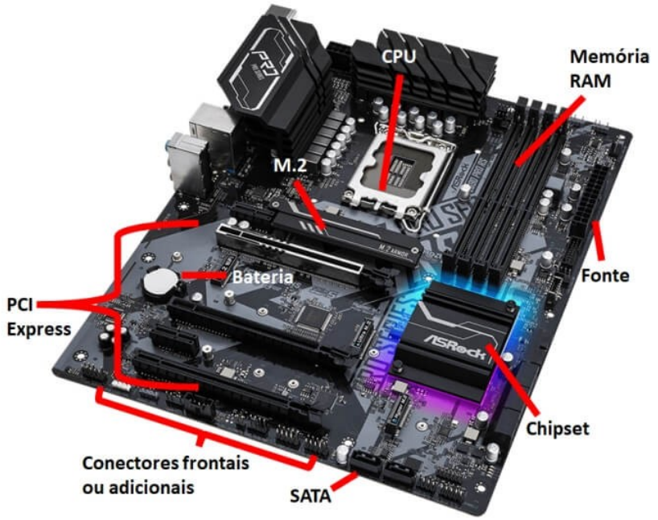
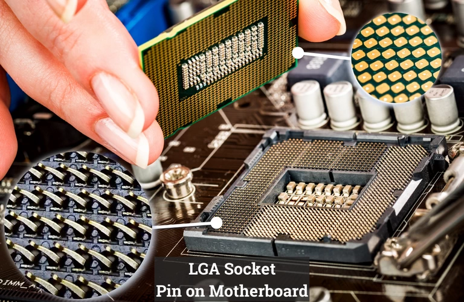
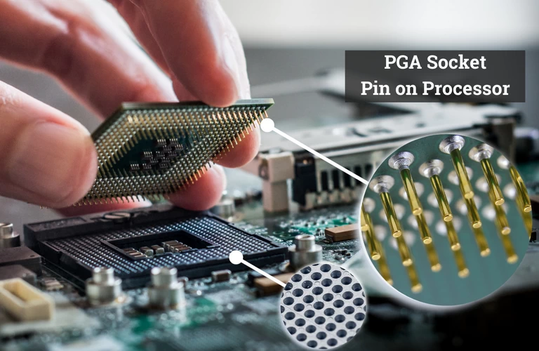
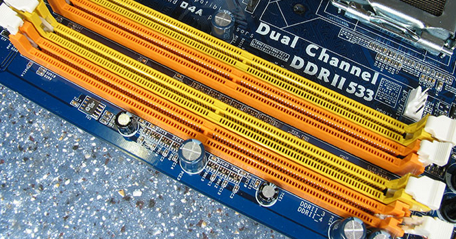
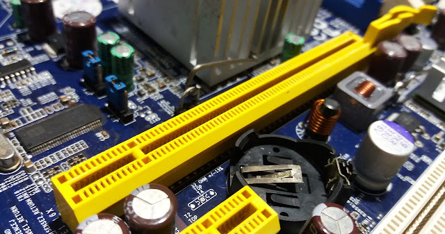
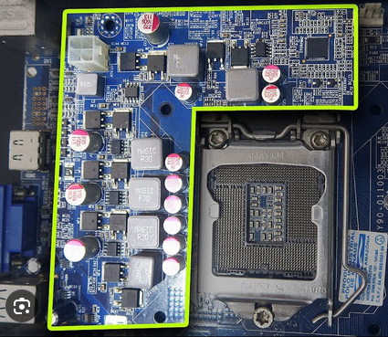
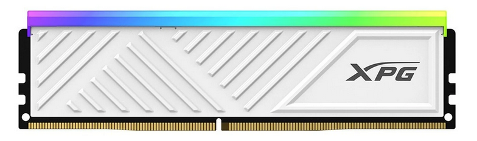
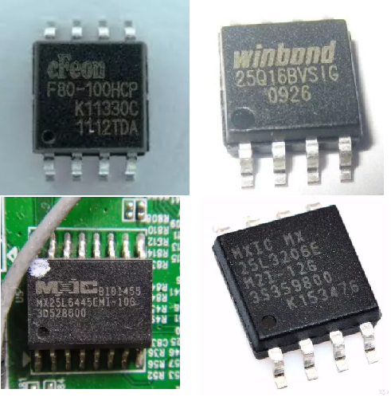
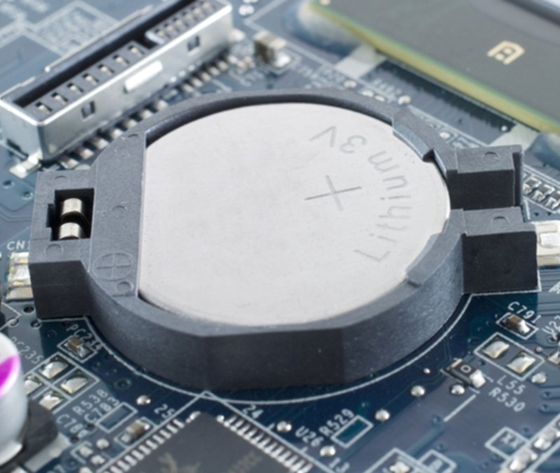

O Coração da
Máquina
Placa-Mãe • Processador • Memórias
Roteiro da Aula
1. Placa-Mãe
- Fatores de Forma
- Chipset & Bus
- Slots & VRM
2. Processador
- Clock & Overclock
- Cores & Threads
- Arquitetura
3. Memórias
- Cache (L1, L2, L3)
- RAM (DDR, Latência)
- ROM (BIOS, Boot)
A Placa-Mãe (Motherboard)
Não é apenas uma base de plástico. É o sistema nervoso central que conecta e alimenta todos os componentes.
PCB (Printed Circuit Board) - Placa de Circuito Impresso
Fatores de Forma (Tamanho)
O tamanho define o gabinete e a quantidade de expansões.
O Chipset (O Gerente)
Imagine que o Processador (CPU) é o chefe da empresa. Ele pensa muito rápido, na velocidade da luz.
O Problema
O teclado, o mouse e o pen-drive são muito lentos para o chefe. Se ele tivesse que falar com cada um, ficaria entediado esperando.
A Solução: Chipset
É o assistente. Ele conversa com todo mundo (lento e rápido), organiza as informações e passa para o chefe só o que importa, na hora certa.
Ponte Norte vs. Ponte Sul
Para organizar esse trânsito de dados, a placa-mãe dividia o trabalho em duas "Pontes" (Bridges).
Ponte Norte (Northbridge)
Conectava o Processador ao que também é muito rápido:
- • Memória RAM
- • Placa de Vídeo (Jogos)
Ponte Sul (Southbridge)
Conectava o Processador ao que é mais lento (Periféricos):
- • Mouse e Teclado
- • USB (Pen-drive)
- • Som e Rede
Evolução dos Computadores
Curiosidade: Hoje em dia, os processadores ficaram tão modernos que "engoliram" a Ponte Norte. A RAM e o Vídeo agora falam direto com o processador. A Ponte Sul virou o que chamamos apenas de "Chipset" hoje.
Soquete (Socket)
O encaixe do processador. Atenção: Processador e Placa-mãe devem ter o mesmo soquete!
LGA (Land Grid Array)
Pinos na Placa-mãe. Processador liso.
PGA (Pin Grid Array)
Pinos no Processador. Placa-mãe com furos.
Slots e Conexões
DIMM (RAM)
Encaixe das memórias. Possui uma trava e um chanfro que muda conforme a geração (DDR3, DDR4, DDR5).
PCI Express (x16)
O slot rápido. Usado principalmente para Placas de Vídeo (GPU).
M.2 (NVMe)
O novo padrão de armazenamento. SSDs que parecem chicletes, direto na placa.

VRM (Módulo Regulador de Voltagem)
O componente mais subestimado. Ele converte os 12V da fonte para a voltagem baixa (ex: 1.2V) que o processador precisa.
Por que importa?
VRMs ruins superaquecem e fazem o processador diminuir a velocidade (Thermal Throttling) para não queimar.
Processador (CPU)
"O cérebro que nunca dorme."

Função
Buscar, Decodificar e Executar instruções.
Material
Silício (Areia purificada) e metais condutores.
Frequência (Clock)
Hertz (Hz) = Ciclos por segundo.
1 GHz = 1 Bilhão de ciclos por segundo.
O Clock é o "marcapasso". Ele dita o ritmo. Quanto mais alto, mais rápido as instruções são processadas (teoricamente).
Núcleos (Cores)
Antigamente, CPUs tinham 1 núcleo (uma boca). Hoje, têm vários (várias bocas para comer tarefas).
Single Task. Faz uma coisa de cada vez.
Quad Core. Faz 4 coisas ao mesmo tempo.
Threads: A Ilusão Mágica
Analogia da Cozinha
Core (Núcleo)
É o cozinheiro. A unidade física que trabalha.
Threads
São as mãos do cozinheiro. Se ele tem 2 mãos (Hyperthreading), ele pode segurar a panela com uma enquanto mexe com a outra.
Transistores e Nanômetros (nm)
Dentro da CPU existem bilhões de transistores (interruptores de luz). A litografia é o tamanho deles.
Quanto MENOR o número (nm):
- ✅ Cabe mais transistores no mesmo espaço.
- ✅ Mais performance.
- ✅ Gasta menos energia (mais eficiente).
Overclocking ⚡
Forçar o componente a trabalhar acima da frequência de fábrica.

Vantagens
Ganho de desempenho "grátis" em jogos e renderização.
Riscos
Aumenta o calor drasticamente. Diminui a vida útil. Pode causar instabilidade (telas azuis).
Requer placa-mãe robusta (VRM) e refrigeração avançada.
Hierarquia de Memória
A regra é: Quanto mais rápida, mais cara e menor.
Memória Cache (SRAM)
A RAM é rápida, mas a CPU é MUITO mais rápida. A CPU não gosta de esperar.
Analogia do Escritório
- L1 (Level 1): Papel na mão do funcionário. (Instantâneo, minúsculo).
- L2 (Level 2): Papel na mesa. (Muito rápido).
- L3 (Level 3): Papel na gaveta. (Rápido, compartilhado entre os núcleos).
- RAM: Arquivo no outro andar. (Lento comparado ao cache).
Memória RAM (DRAM)
Random Access Memory (Memória de Acesso Aleatório)
"Aleatório" significa que ler a última célula demora o mesmo tempo que ler a primeira.
Volátil
Perde tudo sem energia.
Endereçamento
Organizada como uma planilha gigante (Linha X Coluna).
Evolução DDR
Double Data Rate (Transfere dados 2x por ciclo).
O Mito da Velocidade: Latência vs Frequência
Frequência (MHz)
Velocidade máxima de transferência.
Latência (CL)
Tempo de reação (Atraso).
O que é Latência (CL)?
É o tempo que a memória leva para "encontrar" o dado na prateleira antes de começar a enviar para o processador. Quanto menor o número CL, melhor.
Analogia do Garçom
Imagine um garçom que corre muito rápido (Alta Frequência), mas demora 10 minutos parado na mesa tentando lembrar o pedido (Alta Latência). O serviço será lento.
O ideal é: Alta Frequência (Corre muito) + Baixa Latência (Reage rápido).
Dual Channel: O Poder do Par
Usar dois pentes de memória dobra a largura da "estrada" de dados.
Single Channel
64 bits
Dual Channel
128 bits
Por que 2 pentes são melhores que 1?
A comunicação entre CPU e RAM acontece por uma "estrada" (barramento).
- 1 Pente (Single Channel): A estrada tem apenas 64 bits de largura. Os dados podem engarrafar.
- 2 Pentes (Dual Channel): O sistema acessa os dois módulos ao mesmo tempo, criando uma via de 128 bits.
Resultado: O dobro de dados trafega ao mesmo tempo, eliminando gargalos para a CPU (especialmente em jogos).
Memória ROM
Read-Only Memory (Memória Somente Leitura)
- Não volátil (não apaga sem energia).
- Grava o Firmware da placa-mãe (BIOS/UEFI).
- Contém as instruções primordiais para acordar o computador.
BIOS vs UEFI
BIOS (Legacy)
Tela azul e texto branco.
Antigo, suporta HDs pequenos, apenas teclado.
UEFI (Moderno)
Interface Gráfica com Mouse.
Inicia muito mais rápido, suporta HDs gigantes e Boot Seguro.
O que acontece quando você liga o PC?
Fonte envia energia estável (Power Good).
Processador busca instruções na ROM.
POST (Power On Self Test)
A BIOS testa: "Tem RAM? Tem Vídeo? Tem Teclado?"
Se der erro: Bipes sonoros. 🔊
BIOS procura o Sistema Operacional no Disco e carrega para a RAM.
A Bateria da Placa-Mãe (CMOS)
Para que serve?
A ROM não apaga, mas as suas CONFIGURAÇÕES (data, hora, ordem de boot) precisam de energia para ficarem salvas no chip CMOS. Se o relógio do seu PC atrasa, troque essa bateria!
Exercícios de Fixação (1-5)
- Explique a função do Chipset na placa-mãe e por que a "Ponte Norte" desapareceu das placas modernas.
- O que acontece se você instalar um processador com TDP de 125W em uma placa-mãe com VRMs fracos projetados para 65W?
- Defina "Clock" do processador. Um processador de 4GHz é sempre mais rápido que um de 3GHz? Justifique.
- Qual a diferença entre um Core (Núcleo) e uma Thread? Use uma analogia para explicar.
- Por que a memória Cache L1 é muito menor que a memória RAM? (Pense em custo e física).
Exercícios de Fixação (6-10)
- Descreva a diferença entre Latência e Frequência na memória RAM. O que é melhor para jogos?
- O que é Dual Channel e qual a vantagem técnica de usar 2 pentes de 8GB ao invés de 1 pente de 16GB?
- Explique a função da memória ROM e do POST durante a inicialização do computador.
- Qual a função da bateria CR2032 (CMOS) na placa-mãe? O que acontece se ela for removida?
- Compare BIOS Legacy com UEFI. Cite duas vantagens do UEFI.
Próxima Etapa...
Onde guardamos tudo?
HDs & SSDs
Barramentos
Na Aula 04, vamos entender como os dados viajam (Barramentos) e onde eles descansam (Armazenamento).
FIM DA AULA 03
Obrigado pela atenção!
COTIL - Fundamentos de Informática